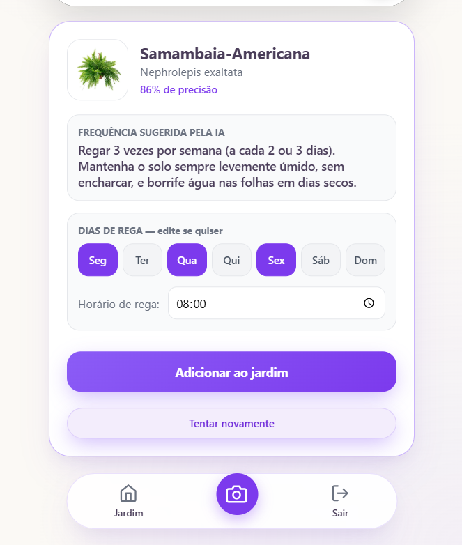
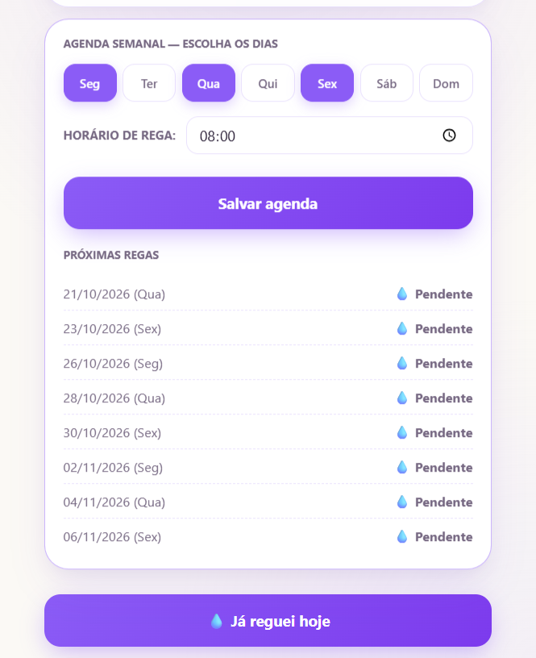
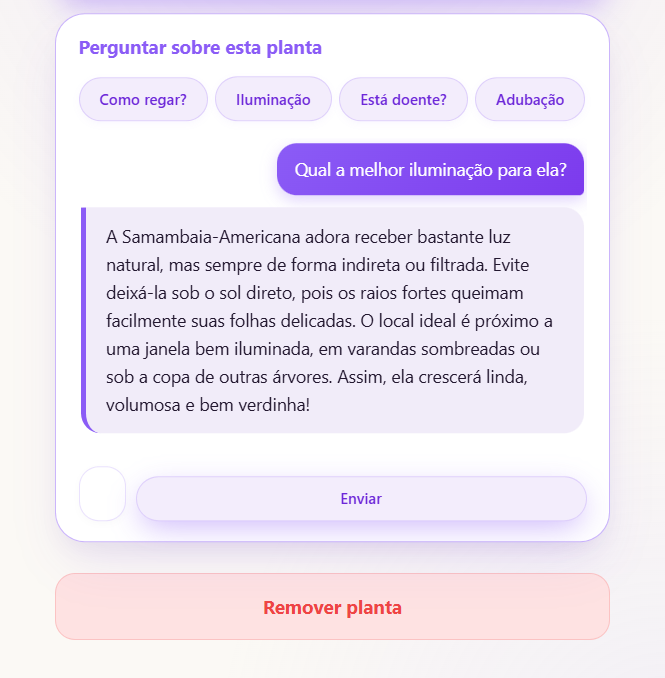

Você não tem o dedo podre.
Suas plantas só precisavam de rotina.
Identifique qualquer espécie em segundos com a câmera do celular. O GoFarming calcula o intervalo exato de rega para o seu clima e te avisa na hora certa — sem afogar as raÃzes e sem esquecer o vaso no canto.
Samambaia-Americana
Nephrolepis exaltata ✓ 98% certeza botânicaPor que as plantas costumam morrer em casa?
90% das perdas acontecem por rega em excesso (afogamento das raÃzes) ou por semanas inteiras de esquecimento. Cuidar por "palpite" quase nunca funciona.
"Acho que molhei na terça..."
Você compra uma planta saudável, coloca na sala e tenta adivinhar o momento da água olhando de longe.
- ✕ Rega dobrada porque duas pessoas da casa regaram no mesmo dia sem saber.
- ✕ Folhas amarelando e você não sabe se é falta de água, luz forte ou excesso de umidade.
- ✕ Férias ou semanas corridas significam encontrar o vaso completamente ressecado.
Cuidado simples com base na espécie
Tire a foto da folha uma única vez. O app descobre a necessidade biológica e cuida da memória por você.
- ✓ Calendário com dias marcados (ex: terças e sextas) calculados para cada vaso.
- ✓ Notificação direta no celular no horário que você escolheu acordar ou chegar em casa.
- ✓ Assistente botânico que responde dúvidas pontuais sobre poda, luz e adubação.
Veja como funciona na prática
Sem menus complicados. Três funções essenciais desenhadas para você cuidar das suas plantas em menos de 1 minuto por dia.
Aponte a câmera e descubra quem é a sua planta
Não sabe o nome cientÃfico ou as regras de cultivo daquele vaso que ganhou de presente? O GoFarming faz a leitura das nervuras da folha, identifica o gênero e já preenche automaticamente o ciclo hÃdrico ideal.

Um toque para confirmar. Notificações para não esquecer.
Chega de calendários complicados. Você define seu horário habitual e, quando o app avisar, basta abrir a página e apertar "Já reguei hoje". O histórico se atualiza e o próximo lembrete é agendado sozinho.

Dúvidas sobre folhas secas ou luz? Pergunte no chat.
O assistente de inteligência artificial do GoFarming não responde generalidades: ele lê os dados exatos da planta em que você está conversando e oferece respostas diretas e práticas para o dia a dia.

Tecnologia a serviço da natureza, não o inverso.
O GoFarming une visão computacional e inteligência artificial para traduzir a ciência botânica em hábitos simples que qualquer pessoa consegue manter.
Visão Computacional Real
Integrado à base de conhecimento da Plant.id, treinada em milhões de espécimes botânicos globais para classificação taxonômica precisa.
Cálculo de Transpiração
Frequências estimadas respeitando o tamanho foliar e os hábitos naturais de umidade de espécies tropicais, suculentas e folhagens.
Web Push PWA Moderno
Funciona direto no navegador com tecnologia de Service Worker para avisos pontuais no seu dispositivo sem precisar baixar lojas de apps.
Seu cantinho verde merece mais do que sorte.
Cadastre-se gratuitamente, fotografe sua primeira planta e comece seu cronograma agora mesmo.